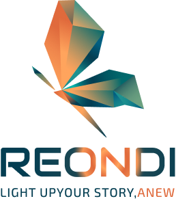

LIGHT UP YOUR STORY,
ANEW
“ 당신의 경험이 새로운 빛이 되도록 ”
급변하는 IT 환경과 AI 도구 앞에서 많은 분들이 심리적 장벽을 느낍니다
REONDI는 다년간의 기획 내공을 바탕으로 당신이 걸어온 시간(Legacy)을 존중합니다
따뜻한 AI 기술을 통해, 지난시간이 아닌 '프리미엄'으로 당신만의 서사를 브랜드로 재탄생시킵니다

변화, 비상, 그리고 아름다운 재탄생
다면체로 이루어진 날개는 고객이 살아온
경험과 지혜의 조각들이 모여 만들어진
'단단한 내공'을 상징합니다
우상향하는 날갯짓은 과거에 머무르지 않고
미래로 나아가는 성장을 의미합니다
LIGHT UP YOUR STORY, ANEW
“당신의 경험이 새로운 빛이되도록”
당신이 걸어온 시간이 브랜드가 되도록,
따뜻한 AI가 그 진심에 색을 입힙니다
가장 품격 있는 언어로 '새로운 시작'을 선언하며,
고객의 서사를 주인공으로 만듭니다
Brand Mission
Core Values

-
Legacy
자산화당신의 풍부한 경험과 혜안을
단순한 결과물 생성이 아닌,
변치않는 견고한 비즈니스
자산으로 만듭니다 -
Warm AI
따뜻한 기술AI는 차갑고 두려운 도구가 아니라,
기술은 배경이 되고 사람의 이야기가
주인공이 되는 배려깊은 맞춤형 디자인
지향합니다 -
Restart
다시 켜다인생 2막의 스위치를 다시 켜는 설렘,
스스로 마케팅을 지속할 수 있도록
자립 가능한 디지털 생태계를 조성해
드립니다
Our Promise
Brand Philosophy
-
기획 통찰력
기술보다 앞선 본질의 이해
-
따뜻한 기술
직관적이고 배려깊은 인터페이스
-
지속 가능한 성장
일회성 제작을 넘어선 자립 지원
-
프리미엄 브랜드
변화,비상 그리고 아름다운 재탄생